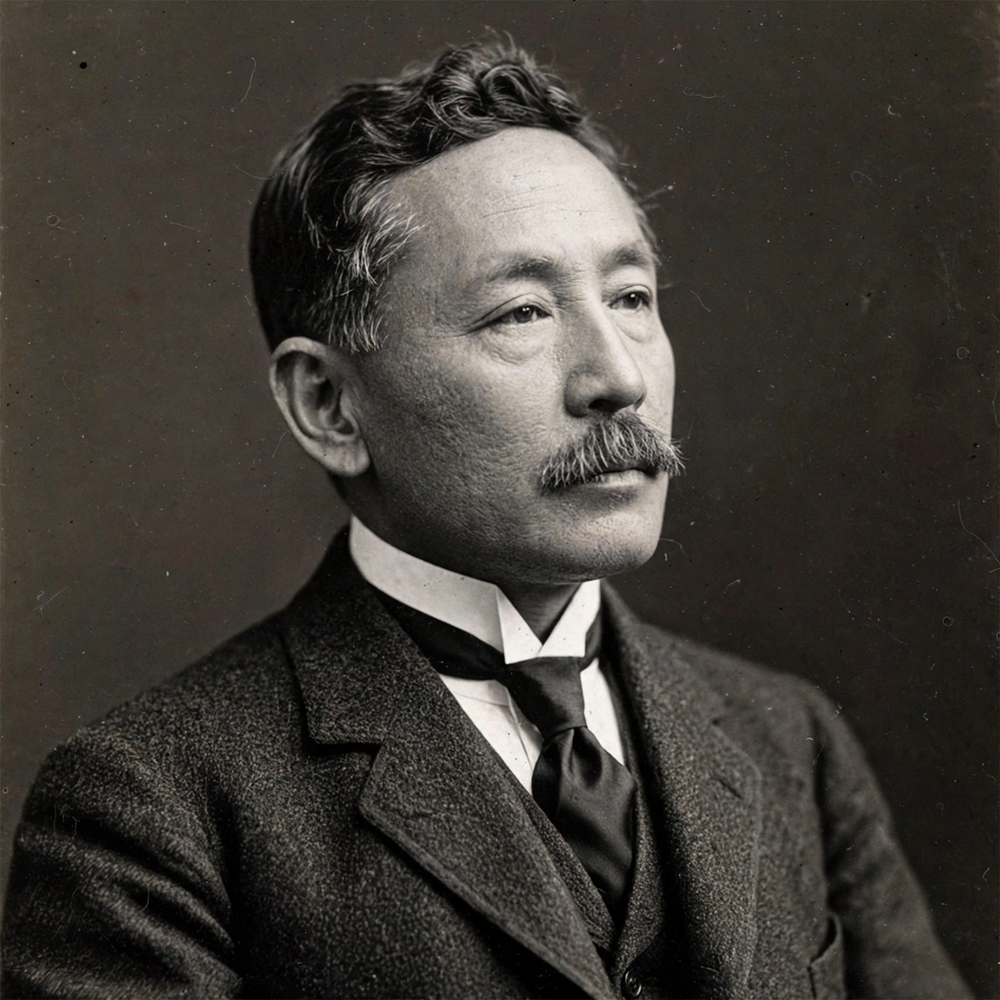

From Wikipedia, the free encyclopedia
| Natsume Sōseki | |
|---|---|
 | |
| Born | Natsume Kinnosuke, 9 February 1867, Edo (Tokyo) |
| Died | 9 December 1916 (aged 49), Tokyo |
| Occupation | Novelist, scholar of English literature |
| Notable works | I Am a Cat (1905), Botchan (1906), Kokoro (1914) |
Natsume Sōseki (夏目 漱石, 9 February 1867 – 9 December 1916), born Natsume Kinnosuke, is widely considered the greatest writer in modern Japanese history and the father of the modern Japanese novel. His portrait appeared on the Japanese 1,000-yen banknote between 1984 and 2004.
Born in Edo (now Tokyo) to a declining samurai-descended family, Sōseki studied English literature at the Imperial University of Tokyo and was sent by the government to study in London from 1900 to 1903 — a period of loneliness and poverty he later described with wry bitterness. On his return he succeeded Lafcadio Hearn as lecturer in English literature at Tokyo Imperial University.
His literary career began with the comic novel I Am a Cat (Wagahai wa Neko de Aru, 1905), narrated by a nameless cat observing human folly, followed by Botchan (1906) and Kusamakura (1906). In 1907 he resigned his university post to write full-time for the Asahi Shimbun, producing the trilogies beginning with Sanshirō (1908) and culminating in Kokoro (1914), his most celebrated novel, a study of guilt, suicide and the end of the Meiji era. His final novel, Light and Darkness (1916), was left unfinished at his death from a stomach ulcer. Sōseki was also a master of haiku and of Chinese-style poetry (kanshi), and a mentor to a generation of writers who gathered at his "Thursday meetings" in Tokyo.
See also: The Pillow Book · Kokoro · Japanese literature